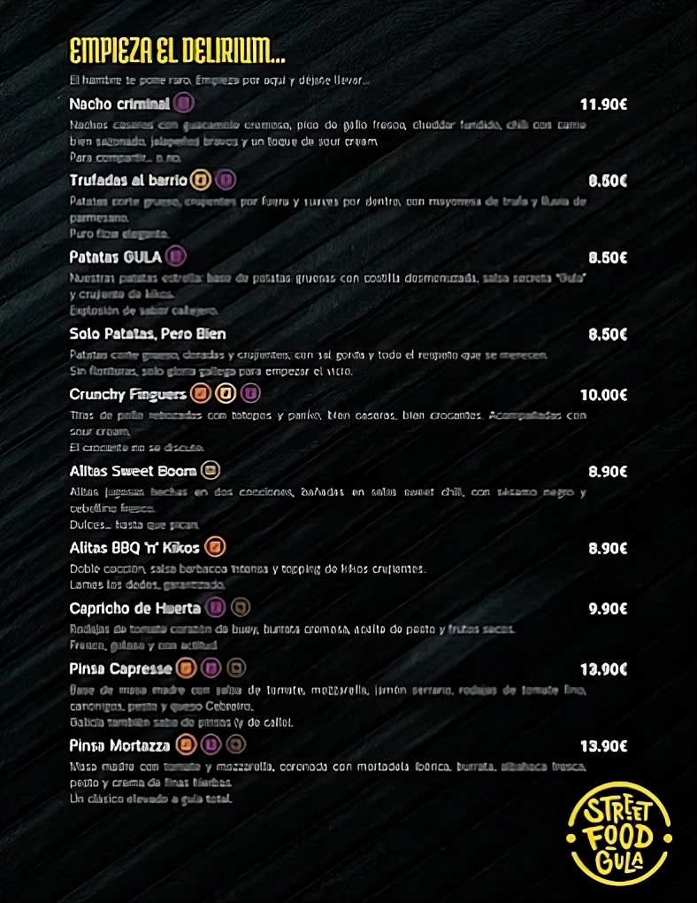
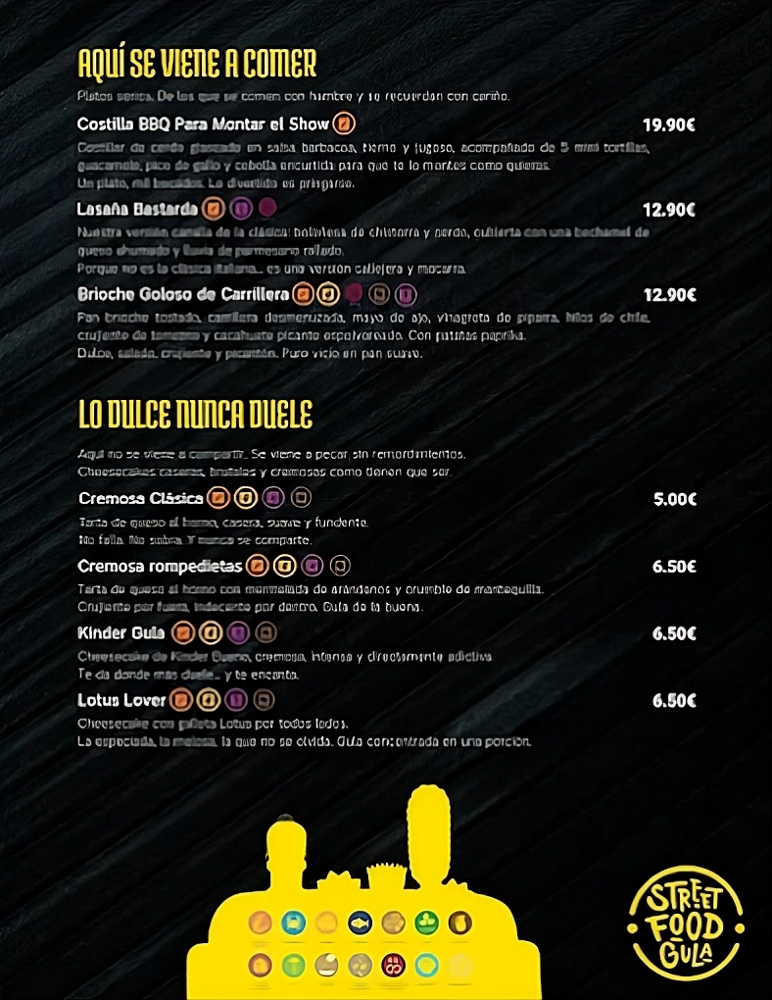
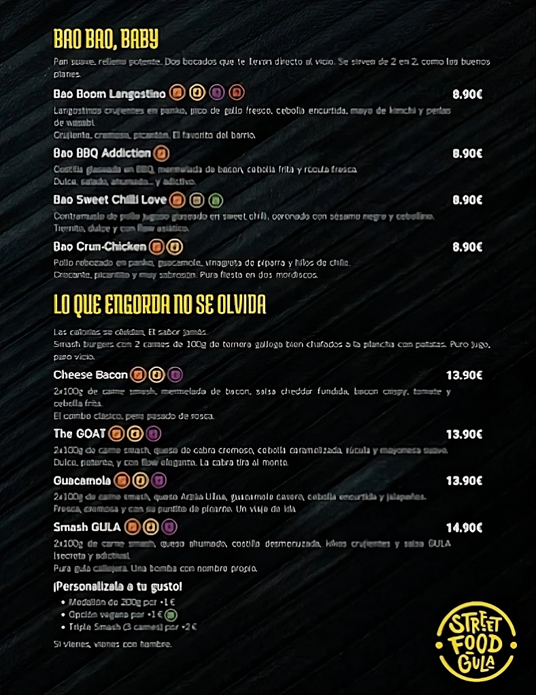

¡Personalízala a tu gusto!
· Módulón de 200g por +1€
· Opción vegana por +1€
· Triple Smash (3 carnes) por +2€
Referencias de la carta




¡Personalízala a tu gusto!
· Módulón de 200g por +1€
· Opción vegana por +1€
· Triple Smash (3 carnes) por +2€


